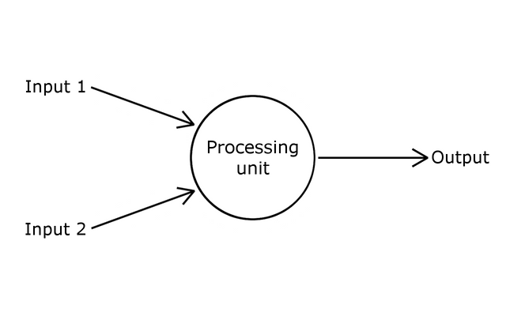

Visualisation of perceptron
Learning rate: 0.001:
Slope of the line: 0.45
y-intercept: 0.45
Consider a line in two-dimensional space. Points in that space can be classified as living on either one side of the line or the other.It shows how a perceptron can be trained to recognize points on one side versus another.
What exactly is a Perceptron
A perceptron is the simplest neural network possible: a computational model of a single neuron. A perceptron consists of one or more inputs, a processor, and a single output.

Fig 1: Single Perceptron
A perceptron follows the feed-forward model, meaning inputs are sent into the neuron, are processed, and result in an output. In the diagram above, this means the network (one neuron) reads from left to right: inputs come in, output goes out.
Lets follow each of these steps in more detail.
-
Step 1: Receive inputs.Say we have a perceptron with two inputs lets call them x1 and x2.
Input 1: x1 = 12
Input 2: x2 = 4
-
Step 2: Weight inputs.Each input that is sent into the neuron must first be weighted, i.e. multiplied by some value (often a number between -1 and 1). When creating a perceptron, will typically begin by assigning random weights. Here, lets give the inputs the following weights:
Weight 1: 0.5We take each input and multiply it by its weight.
Weight 2: -1Input 1 * Weight 1 -> 12 * 0.5 = 6
Input 2 * Weight 2 -> 4 * -1 = -4 -
Step 3: Sum inputs.The weighted inputs are then summed:
Sum = 6 + -4 = 2 -
Step 4: Generate output.The output of a perceptron is generated by passing that sum through an activation function. In the case of a simple binary output, the activation function is what tells the perceptron whether to fire or not. Lets make the activation function the sign of the sum. In other words, if the sum is a positive number, the output is 1; if it is negative, the output is -1.Output = sign(sum) -> sign(2) -> +1
The Perceptron Algorithm:
- For every input, multiply that input by its weight.
- Sum all of the weighted inputs.
- Compute the output of the perceptron based on that sum passed through an activation function (the sign of the sum).